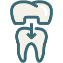

補綴・セラミック治療


秋葉原駅
徒歩3分
セラミック治療とは、虫歯などで失った歯質を天然歯と同じ色や質感のセラミックで補う治療法です。
また、虫歯治療だけでなく、過去に金属で補綴した部分の交換や変色している歯の治療、歯並びや歯の形態の改善などの治療時にもセラミック治療を行います。セラミックの特性を十分に活かすことで、天然歯と同じように美しい歯を再現することができます。
当院の補綴・セラミック治療では、歯や口元を健康的かつ美しく整える歯科治療を行います。「最低限の機能回復」を図るだけの治療から一歩進んで、「健康と見た目の美しさの両立」を図る治療といえるでしょう。最近では若い方からシニア層の方まで、歯の見た目にこだわる患者様も増えてきました。銀歯の見た目や黄ばみでお悩みの方は、千代田区秋葉原の歯医者「中川歯科クリニック」へお越しください。
2014年4月より、小臼歯（前歯と奥歯の中間に位置する歯）に用いるハイブリッドセラミックの被せ物（CAD/CAM冠）に保険が適用されるようになりました。ハイブリッドセラミックは、レジン（歯科用プラスチック）にセラミックを混ぜた素材です。オールセラミックに比べて強度・審美性では劣りますが、十分に自然な見た目を実現できます。以前は保険適用では硬質レジンか銀歯しか選択肢がありませんでしたが、現在は審美性でも衛生面でもメリットの多い白い歯が手に入ります。
当院で取り扱うセラミックは、すべてセラミックでつくられたオールセラミック、金属のフレームにセラミックを焼きつけたポーセレンおよびチタンポーセレン、金属の冠に無機ガラスと有機ガラスを混ぜ合わせたものを焼きつけたハイブリッドセラミックの大きく3種類。強度や色味など、どの素材を採用するか患者様のご要望とすり合わせながら選定していきます。
| 内容 | すべてセラミックでつくられた人口歯（被せ物）です。自然な白さと透明感を再現できるため、天然歯と見分けがつかないほど自然な見た目になります。金属と使っていないため、歯と歯ぐきの間に黒ずみが出ることもありません。金属アレルギーをお持ちの方にも最適です。 |
|---|---|
| 期間 | ◯ヶ月 〜 ◯ヶ月 |
| 料金 | ¥00000 〜 ¥00000 |
| 内容 | オールセラミック同様、白く見た目が自然な人工歯です。金属のフレームにセラミックを焼きつけています。色調の調整がある程度可能で、耐久性が高いのが特徴。金属を使用しているため、歯と歯ぐきの間に黒ずみが出たり、金属アレルギーの症状が出たりする可能性があります。 |
|---|---|
| 期間 | ◯ヶ月 〜 ◯ヶ月 |
| 料金 | ¥00000 〜 ¥00000 |
| 内容 | 主に奥歯の詰め物として使用する白い人工歯です。金属の冠に無機ガラスと有機ガラスを混ぜ合わせたものを焼きつけたもので、奥歯の強い噛み合わせにも十分に耐えられるのが特徴です。色調の調整が可能で、噛み合う歯を傷つけることはありません。 |
|---|---|
| 期間 | ◯ヶ月 〜 ◯ヶ月 |
| 料金 | ¥00000 〜 ¥00000 |
通常、人工歯を作製する場合には、歯型を採取して石こう模型をつくり、その模型を歯科技工所届けるというプロセスが発生します。そのため作製には数日程度かかるため、患者様のお口に新しい人工歯をセットするまでに1週間から10日程度かかってしまうのが一般的です。
当院では「すぐに白い歯にしてほしい」というご要望にお答えにするために、「セレック4.2」というシステムを使ってセラミックの白い歯をおつくりします。まず、口腔内カメラでお口の3D画像を撮影し、コンピューターにデータを取り込みます。データ上で修復物を設計したら、ミリングマシンのレーザーでセラミックブロックを削り出し、修復物を精巧に加工していきます。セレックなら、歯型の採取が不要。技工室を介さず歯科医院で技工物が完成するので、わずか数時間でセラミック治療を完了することが可能です。

| メリット | 内容 |
|---|---|
| 最短1日で治療が完了する | 歯形の採取が不要で、撮影した画像をもとにコンピューター上で設計が可能。人工歯をスピーディーに製作できるため、最短1日で治療が完了します。 |
| 麻酔は1回のみ | 痛みや不快感から苦手とする方が多い麻酔注射を1回（初回の処置時）だけに抑えることができます。 |
| 歯の型取りが不要 | 歯の型取りでは、お口の中に専用の材料を入れて行うため、不快に感じられる方も少なくありません。セレック4.2なら歯の型取りは不要なので、口腔内の撮影だけで済みます。 |
| 患部の汚染がない | 歯を削った状態で時間をおくと、患部が汚れたり炎症を起こしたりすることがあります。セレック4.2なら1日で患部を詰めたり被せたりできるので、衛生的です。 |
| 治療費用が比較的安い | 歯型の採取や歯科技工士による人工歯作製が不要なため、短時間で作製できて、そのぶん治療にかかる費用を抑えることもできます。 |
| 美しく安全・安心 | セラミックは天然の歯に近い自然な白さと透明感を備えており、変色する心配もありません。金属を使わないため金属アレルギーの問題もなく、長期的に安心です。 |
セレック4.2による治療には、保険が適用されていません。保険診療を希望される方は別の方法を検討する必要があります。
STEP
01
歯を削った部分を3D光学カメラで数秒間撮影し、コンピューター上で3Dデータを構成します。
STEP
02
コンピューター上で詰め物や被せ物の形状を設計します。理想的な形になるよう、さまざまな角度から検討を行い、設計後は患者様の歯の色調・部位・状態により適したブロックを選択します。
STEP
03
ミリングマシンと呼ばれる機械を使って、セラミックブロックから詰め物や被せ物を削り出します。コンピューター上での設計どおり、精巧な人工歯を作製できます。
STEP
04
作製した人工歯を先進的な接着技術で患部に装着します。最短の場合、1日で装着まで完了できるケースがあります。
| 診療時間 | 月 | 火 | 水 | 木 | 金 | 土 | 日(祝) |
|---|---|---|---|---|---|---|---|
| 9:30 〜 13:00 | ◯ | ◯ | ◯ | ー | ◯ | ◯ | ー |
| 14:00 〜 19:00 | ◯ | ● | ◯ | ー | ◯ | △ | ー |
● … 14:00 〜 18:00 △ … 14:00 〜 16:00 の診療時間になります。
● … 14:00 〜 18:00
△ … 14:00 〜 16:00 の診療時間になります。